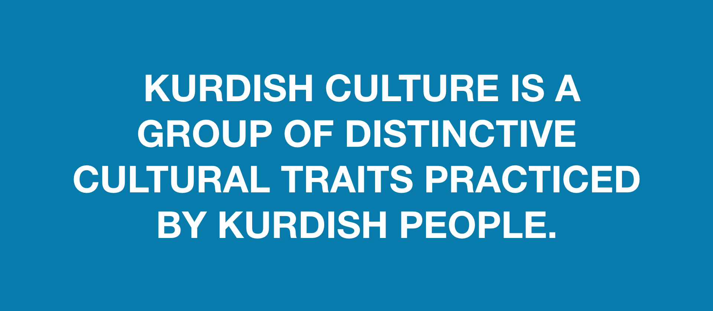
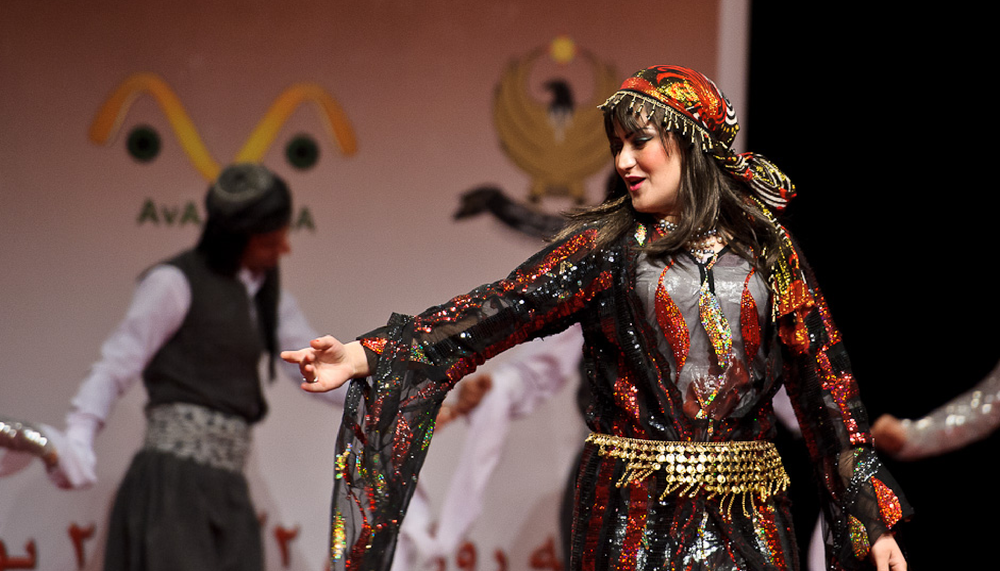

.svg)
Sulaimaniyah modern sites are as interesting as its history and nature, there are many imposing restaurants, Cafes and Shopping malls. Salm Street is considered the most vibrant and lively avenue in Sulaimaniyah where people go walking or having drinks and delicious street food. Besides there are some elegant parks such as Azadi, Daik and HawariShar park. On the other hand, Sulaymaniyah owns two historic Museums in the center of the city, Amna Suraka is one of them that stands for Kurdish great bravery to gain freedom.
Kurdish culture is a group of distinctive cultural traits practiced by Kurdish people. The Kurdish culture is a legacy from the various old people who shaped modern Kurds and their society, but primarily Iranians. Among their neighbors, the Kurdish culture is closest to Persian culture. For example, they celebrate Nawroz, which marks the beginning of the New Year, on March 21st.

Nawroz, the celebration of the New Year, is considered to be the most important event in Kurdish society. For the people in Kurdistan Region of Iraq and in the rest of Iraq, Nawroz is the symbol of revival, happiness, colorful and vibrant life. It is the celebration of victory over tyranny and, in recent years, another occasion for people to enjoy peace and harmony.
The Kurdish people are known for their love of music, art, dance, poetry, and the arts. They are also known for their love of the arts and culture. The Kurdish people are known for their love of music, art, dance, poetry, and the arts. They are also known for their love of the arts and culture.

Address
Sulemani Heights, Sharbazher st.,
Oppositeto Hawari Shar Park.
Phone
+964 772 141 1414
Email
info@uniq.edu.iq
Facebook
Twitter
Instagram